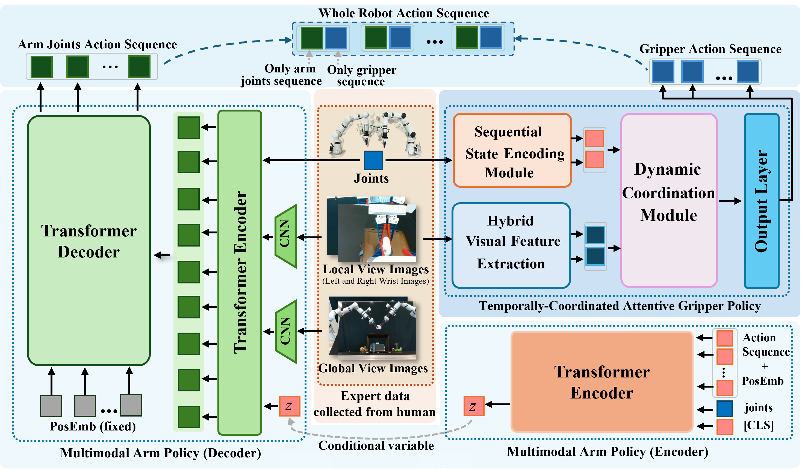
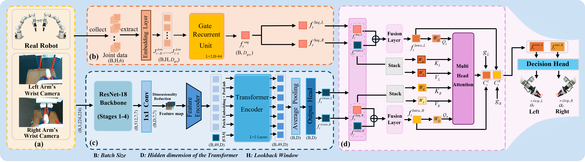
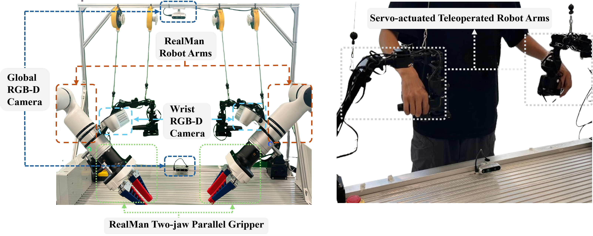
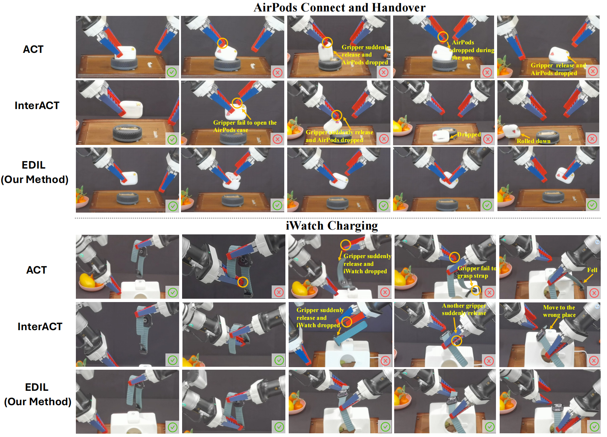
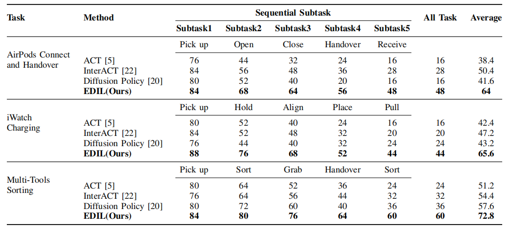
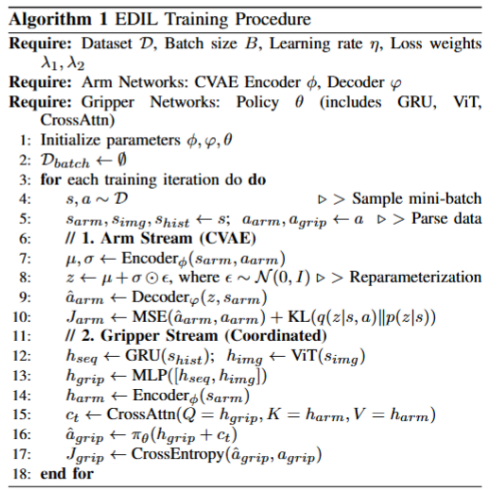
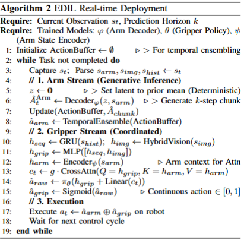
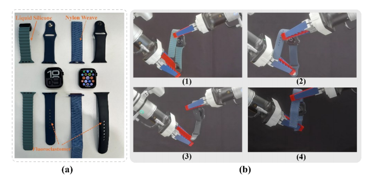

Abstract
As a critical capability for automating complex industrial tasks like precision assembly, bimanual fine-grained manipulation has become a key area of research in robotics, where end-to-end imitation learning (IL) has emerged as a prominent paradigm. However, in long-horizon cooperative tasks, prevalent end-to-end methods suffer from an inadequate representation of critical task features, particularly those essential for fine-grained coordination between the arms and grippers. This deficiency often destabilizes the manipulation policy, leading to issues like spurious gripper activations and culminating in task failure. To address this challenge, we propose an end-to-end Decoupled Imitation Learning (EDIL) method, which decouples the bimanual manipulation task into a Multimodal Arm Policy for global trajectories and a Temporally-Coordinated Attentive Gripper Policy for fine end-effector actions. The arm policy leverages a Transformer-based encoder-decoder architecture to learn multimodal trajectory from expert demonstrations. The gripper policy leverages cross-attention to facilitate implicit, dynamic feature sharing between the arms, integrating sequential state history and visual data to ensure cooperative stability. We evaluated EDIL on three challenging long-horizon manipulation tasks. Experimental results demonstrate that our method significantly outperforms state-of-the-art approaches, particularly on more complex subtasks, showcasing its robustness and effectiveness.





Our Method EDIL
We evaluated EDIL on three challenging long-horizon manipulation tasks. Experimental results demonstrate that our method significantly outperforms state-of-the-art approaches, particularly on more complex subtasks, showcasing its robustness and effectiveness.
SUCCESS RATE COMPARISON ACROSS DIFFERENT TASKS AND METHODS

Algorithm
The complete training pipeline, which integrates the generative modeling of the arm and the coordinated learning of the gripper, is summarized in Algorithm I. During real-world deployment, we employ a closed-loop control strategy. To ensure smooth execution and robustness against sensor noise, we implement Temporal Ensembling for the arm trajectory and a threshold-based binarization for the gripper action. The detailed inference procedure is outlined in Algorithm II.


Robustness and Generalization
Object Geometry and Material Variations
To evaluate the generalization of our policy against physical variations, we conducted experiments on the iWatch Charging task using watch straps with different materials, colors, and lengths. The test set encompasses straps made of Liquid Silicone, Fluor elastomer, and Nylon Weave, featuring distinct colors (green, blue, and black). The quantitative results, demonstrate that our method maintains competitive performance across these diverse configurations. Although the original Liquid Silicone strap yielded the highest success rate, the policy effectively generalized to unseen straps despite significant differences in surface texture and deformation properties.
Comparisons of original set in iWatch Charging task of object geometry and material variations


Illustration of object geometry and material variations in the Watch Charging task
Visual Occlusion Analysis
To further assess system reliability under sensory limitations, we simulated camera failures during the inference phase (using models trained on full-view data). Our setup utilizes four cameras: two wrist-mounted and two global cameras (positioned at the Top and Bottom). We established two test groups: one with the Bottom camera obstructed and another with the Top camera obstructed. Experimental results indicate that while obstructing a camera inevitably leads to a slight decrease in success rates compared to the full-observation baseline, the system maintains sufficient resilience to successfully execute the task. This suggests that our decoupled representation can effectively infer necessary control features even from partial visual data. Notably, we observed that obstructing the Top camera resulted in a more significant performance impact than obstructing the Bottom camera. We attribute this to the Top camera's vantage point, which captures a wider field of view and more effective global spatial information essential for bimanual coordination.
Comparion result of different visual real world experiment setting


Comparison of different visual in real-world experiment setting
Different camera resolution and inference frequency
we conducted a comprehensive sensitivity analysis to quantitatively assess these factors. The experimental results demonstrate that when the source resolution is reduced from 640 × 480 to 320 × 240 , the success rate only marginally declines from 65.6% to 58.6%, with the motion remaining fluid and stable. This confirms that EDIL prioritizes robust structural features over redundant high-frequency textures, showcasing exceptional tolerance to image quality degradation. Such visual robustness ensures the system's viability across diverse hardware configurations and lighting conditions.
Comparison of Our Method with different camera resolution and inference frequency

Some typical failure-case

Some hyperparameters


BibTeX
Waiting...